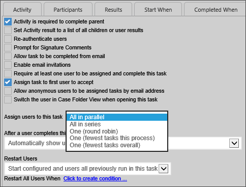

|
|
Lesson Contents | In this Lesson, you will learn how to assign tasks to multiple persons using serial, parallel, round-robin, and workloading methods. |
There are a number of ways to deal with multiple assignees for a task. Multiple assignment arises when a task is assigned to a specific user group, rather than a single user, though it is not unusual for a task to be assigned to a number of specific individuals. Process Director enables you to make multiple assignment in series or in parallel. In addition, Process Director enables task loading, and voluntary acceptance.
In the sample project for this training, the PR/PO Process, which is the main Process Timeline for the process, has a Process Timeline activity named Finance Approval that is assigned to the entire finance group, but which allows the first person in the Finance Group to accept the task, after which the task is assigned solely to that user.
The properties that determine how multiple assignment is handled are found in the Advanced Options tab for Process Timeline User activities.

In the sample project's Finance Approval activity, the Assign task to first user to accept property is checked. When this option is checked, a notification is sent to all assignees that a task is waiting for acceptance, and a task will will appear on each assigned user's task list. All of the assignees, when they open the process' Form, will see only an Accept Task button. When the first assignee clicks the Accept Task button, the task will be assigned only to that person, and the task will disappear from the task lists of all of the other assignees. Now, the task is solely the property of the user who accepted it. If the Assign task to first user to accept property is not checked, then the response to multiple assignment is handled through the Assign users to this task property.
The Assign users to this task property enables you to select how you wish to assign a task when multiple users are associated with the same task. You have the following options:
| OPTION | DESCRIPTION |
|---|---|
| All in parallel | All users will be assigned the task at the same time, and will complete their actions at the same time as the other users. |
| All in series | Each user will be assigned the task individually, and each user must complete the assigned action before the task is assigned to the next user. The process will continue until all users have completed their actions. |
| One (Round Robin) | Only one user will be assigned the task each time an instance of the timeline is run. Each time an instance is run, a different user will be assigned the task until all users have been assigned an instance of the process. This will divide the assignments equally among all assigned users. |
| One (fewest tasks in this process) | Only one user will be assigned the task each time an instance of the timeline is run. Process Director will assign the task to the user who has the fewest number of active tasks pending in this process. This method assigns the task to the user who has the smallest workload in this process. |
| One (fewest tasks overall) | Only one user will be assigned the task each time an instance of the timeline is run. Process Director will assign the task to the user who has the fewest number of active tasks in their task list. This method assigns the task to the user who has the smallest overall workload. |
Tasks can be restarted in a number of ways. An administrator can manually restart a task, but more commonly, a task is restarted automatically because a loop has iterated, or a Branch activity has rolled back to the task. You can decide how Process Director handles task assignments when a task restarts by configuring the Restart Users property.
This option determines how participants are assigned to the activity when it must be restarted, which is particularly relevant when an implementer changes the participants assigned to an activity in the Process Timeline definition. An existing instance may have been created when different participants were configured to participate in the task. This option enables you to determine how to handle user assignments when the configured users have changed.
It is also important to note that the term "restart" is used for both:
In either case, the Restart Users options you select will be applied.
The following options are available:
| OPTION | DESCRIPTION |
|---|---|
| Start only configured task participants | This option will assign the task to the currently configured users, irrespective of which users may have been previously assigned to the activity. |
| Start configured and users all previously run in this task. | By choosing this option, you ensure that both the currently configured users, as well as any users who were previously assigned the task, are assigned the task. |
| Start only users that previously completed this task | This option will assign the task only to users who completed the task when it was previously run for this instance. Those users will be re-assigned the task irrespective of whoever is currently configured for task assignment in the Process Timeline definition. |
| Start from last completed user | If multiple users are assigned to the activity instance, this option will re-assign the activity to the last user who completed it when it was initially run. |
| Start users that did not complete previously | If multiple users are assigned to the activity instance, this option will assign the task to users who did not previously complete it. For instance, if the activity uses a round-robin assignment, the activity will be assigned to one of the users who were not assigned it on the initial run. |